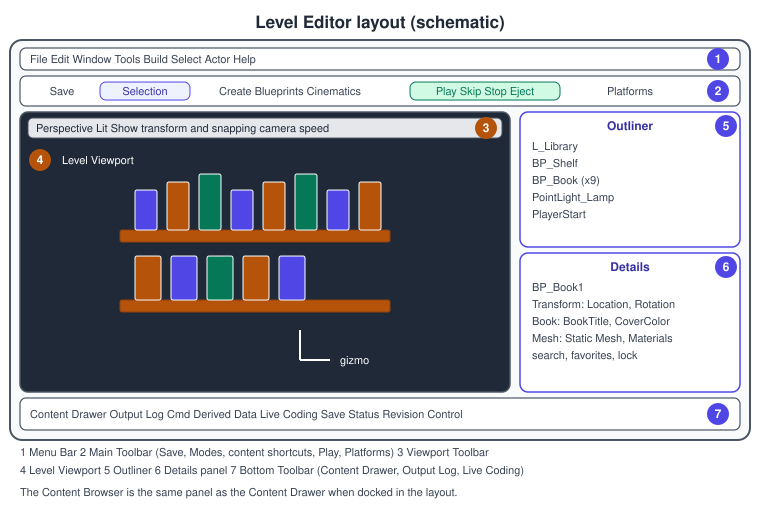
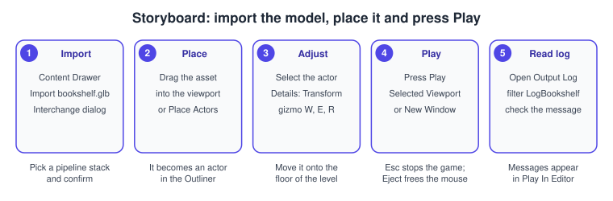
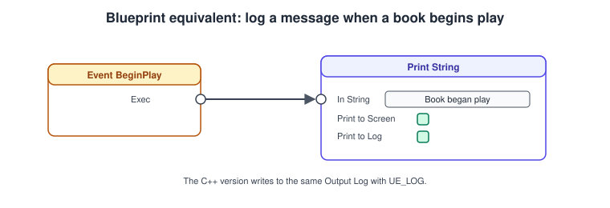

Editor Tour
|
This content was generated with the assistance of AI and should be verified against the official documentation before being relied on in production. |
The Unreal Editor is the program in which a project is assembled: you place actors in a level, set their properties, create and organise assets, write Blueprints and press Play to see the result.
Almost everything it can do is also available from code, and many of its panels are built from the same reflection data (see
UObject, Reflection and Garbage Collection) that your own classes expose, which is why a UPROPERTY you write shows up in the Details panel without any editor code.
This page was checked in November 2026 against the Unreal Engine 5.8 documentation (release 5.8, hotfix 5.8.4). It describes the desktop editor on Windows, macOS and Linux; the layout is the same on all three, with the Command key in place of Ctrl on macOS where Epic’s pages say so. The running example is the Bookshelf project created in
Installing and Building from Source; here we open the level L_Library, import the shared bookshelf.glb, place it and press Play.
Keyboard shortcuts shown are the defaults and can be rebound in the Shortcut Manager, which 5.8 redesigned; the engine-neutral editor vocabulary (scene, hierarchy, assets) is in
Scene Graphs and Asset Formats.
The window at a glance

Epic’s interface page names these parts; the numbers refer to the figure.
| # | Part | What it is for |
|---|---|---|
1 |
Menu Bar |
At the top-left of each editor window. File, Window and Help appear in every editor; the other menus belong to the editor you are in (Tools holds New C++ Class and the Class Viewer, Window opens the Place Actors panel and any closed panel). |
2 |
Main Toolbar |
The Save button, the Select the open level button, mode selection, content shortcuts (Create, Blueprints, Cinematics), the Play mode controls and the Platforms menu. |
3 |
Viewport Toolbar |
At the top of the Level Viewport: transform and snapping tools, camera tools, view mode and show flags, performance and scalability tools, and viewport options. |
4 |
Level Viewport |
Shows the level in perspective (3D) or orthographic (2D) views. Selected actors are moved, rotated or scaled with gizmos. |
5 |
Outliner |
A hierarchical tree of everything in the level. Hide actors with the eye button, organise them in folders, use context menus. You can open up to four Outliners. |
6 |
Details panel |
The properties and components of the selected actor, with filtering and a selection lock. |
7 |
Bottom Toolbar |
Content Drawer, Output Log and the command prompt, Tracing, Stall Log, Derived Data, the Live Coding compiler button (C++ projects only), Save Status and Revision Control. |
Everything is a dockable tab: drag a tab by its title to move it, drop it on the edge of another panel to split, or on the middle to stack. Window > Load Layout and Save Layout store arrangements, and Window reopens a panel you closed. Each asset type opens its own editor in a new window (Blueprint Editor, Material Editor, Sequencer), and those windows have their own Menu Bar and toolbar but share the File, Window and Help menus.
Source: Unreal Editor Interface
The Level Viewport
The viewport shows one of four views: Perspective, or the orthographic Top, Side and Front views, and viewports can be maximised or split. Navigation in perspective uses the mouse and keyboard together.
-
Hold the right mouse button and move the mouse to look around, and use W, A, S, D to fly, with E and Q for up and down. The mouse wheel while flying changes the camera speed, which is also set from the camera tools in the Viewport Toolbar.
-
With the left mouse button you can dolly and rotate more precisely; F focuses the selected actor, and Alt with the left mouse button orbits around the selection.
-
Select an actor to see its gizmo: W chooses translate, E rotate and R scale. Drag an axis arrow, plane handle or ring.
-
The Transform and Snapping tools in the Viewport Toolbar switch between world and local space and set grid, rotation and scale snap increments. Snapping to a grid keeps shelves and boards aligned.
-
View modes in the Viewport Toolbar change how the scene is drawn: Lit is the final lighting, Unlit and Wireframe show geometry, and further modes (for example the optimisation view modes) visualise Nanite, Lumen and shader complexity. Show flags toggle categories of objects, such as icons and billboards.
The Perspective menu sets the viewport type, the cog or Viewport Options control things such as field of view and the game-view toggle (G) that hides editor-only gizmos so you can judge the final look. In the Viewport Toolbar the performance and scalability tools set the viewport’s quality level, which is useful on a modest GPU: lowering scalability makes the editor responsive without changing the project’s shipping settings. The 5.8 release notes add three viewport changes: orthographic viewports use a less dense grid, gizmos draw on top of selected objects in orthographic views, and the gizmo system was consolidated with Default, Classic and Maya-style interaction presets.
The Outliner and the Details panel
The Outliner is the table of contents of the open level. Every actor is a row; folders group rows for your own tidiness and have no effect on the game. Click a row to select the actor in the viewport and double-click to focus the camera on it. The Info dropdown adds a column for levels, layers or ID names. The eye button hides an actor in the editor only (it is still in the packaged game). For large levels the Outliner can be filtered by type or searched by name. A level with many actors benefits from the 5.8 improvements to the Outliner (dynamic invalidation, hotkeys that keep working when it is undocked).
The Details panel shows the selected actor: the actor’s own properties first, then its components. Typical sections are Transform (Location, Rotation, Scale and Mobility), Rendering, Physics, Collision and one section per category you declare in C++. Each property can be edited, reset to default with the small arrow that appears when it differs from the default, and copied or pasted from its context menu. Use the search box to filter properties, and the lock icon to keep the panel on an actor while you click others. For an actor from a Blueprint class, a component tree at the top lets you select the root or any component. In 5.8, entire categories can be marked as favorites and the section bar can filter to favorites or to modified properties.
Which properties appear is decided by the reflection specifiers on the C++ side. UPROPERTY(EditAnywhere) shows an editable field on both the class defaults and each placed instance; UPROPERTY(EditDefaultsOnly) only on the class defaults; UPROPERTY(VisibleAnywhere) shows the value read-only; meta=(ClampMin=0) limits the value in the field. The full list is in the reflection page; the next example shows the effect in the Details panel.
Source: Unreal Editor Interface and Level Editor in Unreal Engine
The Content Browser and the Content Drawer
The Content Browser is the project’s file explorer: it creates, imports, organises, views and manages content assets, which live under the project’s Content folder (shown as /Game) and, optionally, engine and plugin content. Assets are .uasset and .umap files; renaming or moving them in the file system outside the editor breaks references, so do these operations in the Content Browser, which leaves
redirectors behind. There is a Content Drawer in the bottom-left corner: a temporary Content Browser that opens with the Content Drawer button or with Ctrl + Space (Cmd + Space on macOS) and closes when it loses focus; Dock in Layout keeps it open as a normal panel.
Features you will use daily:
-
Folders and the Sources panel. A tree of folders on the left, or under the collapsed Sources panel. Keep a convention such as
/Game/Bookshelf/Blueprints,/Game/Bookshelf/Materialsand/Game/Bookshelf/UI. -
Search and filters. A text filter finds assets; type filters narrow by class; advanced search operators exist. The 5.8 release notes add Filter by Selection (Alt + F), a custom Material Instance filter, sorting of filters alphabetically or by insertion order and Capture Thumbnail (Ctrl + Shift + T). An experimental Semantic Search plugin searches by meaning with a vector index instead of keywords.
-
Collections. Private, local or shared sets of assets that do not move files, useful to track "all book materials".
-
Right-click menus. Import, create assets (Blueprint Class, Material, Material Instance, Data Asset and so on), Migrate to copy assets with their dependencies into another project, and rename and delete with reference checking. In 5.8 the right-click menu has fewer top-level categories and new Audio, Animation and Data sections, with Material Instances in the Common section.
-
Drag and drop. Dragging a static mesh into the viewport creates a StaticMeshActor, a skeletal mesh a SkeletalMeshActor, and a Blueprint creates an instance of that Blueprint.
Importing the Bookshelf model
Unreal imports external files with Interchange. glTF is among the supported formats, and the Bookshelf’s bookshelf.glb is a glTF 2.0 binary with six boards, nine book nodes that share one mesh with three materials (Cover, Spine, Pages) and a Wood material for the shelf.
-
Open the Content Drawer (or Content Browser) and choose or create the folder
/Game/Bookshelf/Meshes. -
Right-click in the folder and choose Import to /Game/Bookshelf/Meshes, or drag
bookshelf.glbfrom your file manager into the Content Browser. File > Import Into Level also exists and works with glTF and MaterialX. -
The Interchange Pipeline Configuration window opens. Choose a pipeline stack from the Choose Pipeline Stack dropdown, check the options (Basic Layout shows only the core properties; Filter on Contents narrows them by the source file; Preview lists the assets that will be created) and confirm the import.
-
The static mesh, materials and textures appear as assets. Open
Bookshelfand the materials to check them; pipeline stacks are configured in Project Settings > Interchange, and a reimport remembers the options. -
Drag the static mesh into the viewport or right-click the viewport and choose it under Place Actor. The actor appears in the Outliner; set its location in the Transform section of the Details panel.

Placing actors and the Modes
Besides dragging assets, the Place Actors panel (Window > Place Actor) lists ready-made actors in categories: Recently Placed, Basic, Lights, Shapes, Cinematic, Visual Effects, Geometry, Volumes and All Classes, with a search box. The Class Viewer (Tools > Class Viewer) lists every class and tints placeable actors blue. To swap actors, select an asset in the Content Browser, right-click the actors in the level and choose Replace Selected Actors with.
Modes change what the viewport tools do. The Modes dropdown in the toolbar offers Select (Shift + 1), Landscape (Shift + 2), Foliage (Shift + 3), Mesh Paint (Shift + 4), Modeling (Shift + 5), Fracture (Shift + 6), Brush Editing (Shift + 7) and Animation (Shift + 8). Each mode adds its own toolbar and panel: Landscape sculpts terrain, Foliage paints instances, Modeling edits meshes. Switch back to Select to work normally. The Layers panel groups actors for selection and visibility.
Play In Editor
Play In Editor (PIE) runs the game inside the editor: the engine duplicates the level into a game world, so changes you make while playing are discarded when you stop, and the editor world is untouched. The Play mode controls in the Main Toolbar are Play, Skip, Stop and Eject; the Play Options dropdown chooses where the game runs.
-
Selected Viewport is the default: the game starts in the active viewport.
-
New Editor Window (PIE) opens a separate window and leaves the viewport as it was. Mobile Preview ES3.1 (PIE) approximates a mobile device in a separate window. VR Preview uses a connected headset. Standalone Game launches the game outside the editor (a separate process), the closest to a packaged run before packaging.
-
Simulate runs the world without possessing a player; objects fall and AI runs while you keep the editor camera and can select and inspect actors. Use it to watch Bookshelf books fall off the shelf.
-
Eject releases control of the playable character and returns mouse-cursor control while the game keeps running, so you can select actors and inspect their live properties in the Details panel. Pressing Esc stops the session. To free the mouse without ejecting use Shift + F1.
-
The Play options also set the number of players and the net mode for multiplayer testing; see Networking and Replication.
Two 5.8 details: a button enables or disables editor shortcuts while PIE is active, and new-process PIE for mobile respects the preview platform, device profile and aspect ratio. The Play From Here shortcut (Alt + Shift + P) was fixed. PIE is not the same as a packaged game: it uses editor-only data, uncooked assets and editor modules, so always test a cooked build before shipping (see Packaging for Desktop).
A first example: the book logs its own start
The editor connects to code through classes and logging. The following pair defines ABookActor for the Bookshelf and logs when play begins; the properties are editable in the Details panel and the message appears in the Output Log. LogBookshelf is declared by the Bookshelf module, shown in
Project Structure and Modules. Create the files with Tools > New C++ Class (parent class Actor, name BookActor) or write them by hand.
// Source/Bookshelf/BookActor.h
#pragma once
#include "CoreMinimal.h"
#include "GameFramework/Actor.h"
#include "BookActor.generated.h"
class UStaticMeshComponent;
UCLASS()
class BOOKSHELF_API ABookActor : public AActor
{
GENERATED_BODY()
public:
ABookActor();
protected:
virtual void BeginPlay() override;
/** Visible in the viewport; set the static mesh in the Details panel. */
UPROPERTY(VisibleAnywhere, BlueprintReadOnly, Category = "Book")
TObjectPtr<UStaticMeshComponent> Mesh;
/** Shown in the Details panel of every placed book. */
UPROPERTY(EditAnywhere, BlueprintReadWrite, Category = "Book")
FText BookTitle;
UPROPERTY(EditAnywhere, BlueprintReadWrite, Category = "Book")
FLinearColor CoverColor = FLinearColor(0.35f, 0.12f, 0.08f, 1.0f);
};// Source/Bookshelf/BookActor.cpp
#include "BookActor.h"
#include "Components/StaticMeshComponent.h"
ABookActor::ABookActor()
{
PrimaryActorTick.bCanEverTick = false;
Mesh = CreateDefaultSubobject<UStaticMeshComponent>(TEXT("Mesh"));
SetRootComponent(Mesh);
BookTitle = FText::FromString(TEXT("Untitled"));
}
void ABookActor::BeginPlay()
{
Super::BeginPlay();
UE_LOG(LogBookshelf, Log, TEXT("Book '%s' began play"), *BookTitle.ToString());
}Source: Actors in Unreal Engine and Logging in Unreal Engine
After compiling (press Ctrl + Alt + F11 with Live Coding, or build from the IDE) the class appears in the Place Actors panel under All Classes and in the Content Browser’s Add > Blueprint Class picker. Place a few books, give each a different Book Title in the Details panel, and press Play: the Output Log (Window > Developer Tools > Output Log or the Bottom Toolbar) prints one line per book.
Typing LogBookshelf in the Output Log filter box shows only these lines.

In a Blueprint subclass BP_Book the same behaviour is two nodes. Open the Blueprint, go to the Event Graph, wire Event BeginPlay to Print String and read the message in the viewport or the log; Blueprints are explained in
Blueprints Visual Scripting.
The Live Coding button
C++ projects show Live Coding in the Bottom Toolbar. Live Coding is on by default in new installs; press Ctrl + Alt + F11 in the IDE or in the editor to compile and patch C++ changes while the editor or Play In Editor session keeps running. It does not work on consoles or mobile. Header changes that add members or functions are riskier than body edits, and a changed default value in a .cpp constructor does not
update existing instances; change it in the header declaration or restart. Settings are under Editor Preferences > General > Live Coding; if you disable Enable Live Coding, the editor falls back to Hot Reload.
Scripting the editor
The editor can also be driven from scripts. Enable the Python Editor Script Plugin under Edit > Plugins (Scripting section) and restart the editor. The Output Log’s console input can then be switched to Python mode, where each line runs immediately, and File > Execute Python Script runs a file. The following lists every Blueprint book in the open level.
import unreal
actor_subsystem = unreal.get_editor_subsystem(unreal.EditorActorSubsystem)
books = [a for a in actor_subsystem.get_all_level_actors()
if a.get_class().get_name().startswith("BP_Book")]
for book in books:
location = book.get_actor_location()
unreal.log("{} at {}".format(book.get_actor_label(), location))
unreal.log("Found {} books".format(len(books)))Editor customisation in C++ (editor modules, tool menus and Slate) follows the module rules in the project structure page and uses the Slate widgets of UMG, Slate and CommonUI.
Common mistakes
-
Editing the level while Play In Editor is running and expecting the change to stay: the PIE world is a copy and is discarded on stop. Edit the level with the game stopped; in a Simulate session, the Keep Simulation Changes action copies a change back.
-
Moving or renaming assets in the file system. Do it in the Content Browser so redirectors keep references valid.
-
Confusing the eye button with game visibility. An actor hidden in the Outliner is still in the game; use the Actor Hidden In Game property for that.
-
Leaving the actor’s Mobility at Static and then moving it from Blueprint or code: moving a static actor at runtime is not supported, so set Mobility to Movable for books that will be pulled out.
-
Forgetting to save. The Save button saves the level; modified assets are saved from the Content Browser or with File > Save All.
-
Stale layouts after upgrades. If panels vanish, use Window > Load Layout > Default Editor Layout.
-
Testing only in PIE. PIE uncooked assets mask packaging problems; test a Standalone Game or a packaged build.
Performance notes
-
The viewport renders the same scene the game does, with editor overlays. Lower the viewport’s scalability level, switch off Realtime rendering when idle (a viewport option) and avoid very many open viewports to keep the editor responsive.
-
A large Content Browser benefits from folders and filters rather than a flat list; asset registry scans are the slow step on first open of a big project, and the Derived Data Cache (shown in the Bottom Toolbar) is what makes later opens fast. Missing derived data greatly increases load times.
-
Each Outliner and Content Browser tab adds update work; close the ones you do not use. The 5.8 dynamic invalidation in both panels reduces redraw work in large levels.
-
PIE with several players multiplies the cost of the game; reduce the player count when you are not testing multiplayer.
What changed recently
| Version | Change |
|---|---|
5.8 |
Shortcut Manager redesigned in its own window with better search and import and export. Editor Preferences, Project Settings and plugin settings share one style with category-scoped search, dedicated hotkeys and reset-to-default. |
5.8 |
Details panel favorites for whole categories; Content Browser right-click menu reorganised; Filter by Selection and Capture Thumbnail commands; Semantic Search plugin (experimental). |
5.8 |
Orthographic viewports with a sparser grid, gizmos on top of selected objects, and the gizmo presets Default, Classic and Maya-style. Preview scenes and material previews accept custom floor meshes and drag-and-drop from the Content Browser. |
5.8 |
Play In Editor gets a button to toggle editor shortcuts while playing, and mobile new-process PIE follows the preview platform and device profile. |
5.0 |
UE5 introduced the Content Drawer beside the docked Content Browser; Chaos replaced PhysX as the default physics engine, which changes the physics sections of the Details panel. |
Source: Unreal Engine 5.8 Release Notes
Where the books are outdated
Most of the books in the bibliography start with a tour of the editor: Marcos Romero and Brenden Sewell’s Blueprints Visual Scripting for Unreal Engine (chapter 1, Unreal 4.20 to 4.22), Nitish Misra’s Learning Unreal Engine Android Game Development (chapter 2), the learning path Unreal Engine: Game Development from A to Z by Joanna Lee, John P. Doran and Nitish Misra (modules 1 and 2, chapter 1), Benjamin Carnall’s Unreal Engine 4.X By Example (chapter 1) and Zhenyu George Li and E. Wyn Roberts' Unreal Engine 5 Game Development with C++ Scripting (chapter 1). They target UE 4.4 to 4.22 or UE 5.0, so what you see in 5.8 differs in these ways:
-
Modes. The Modes dropdown in the toolbar now offers Select, Landscape, Foliage, Mesh Paint, Modeling, Fracture, Brush Editing and Animation, with the shortcuts Shift + 1 to Shift + 8; the older editor had fewer modes and a different panel.
-
Content access. Besides the docked Content Browser there is the Content Drawer, opened with Ctrl + Space, and 5.8 reorganised the right-click menu.
-
Cinematics. The toolbar offers Cinematics for Sequencer; Matinee was replaced (see Versions, Licensing and History).
-
Details panel and settings. Favorites, modified-property filtering, the unified settings style and the new Shortcut Manager did not exist; verify default shortcuts against your own Shortcut Manager.
-
Links. The AnswerHub, the Unreal Wiki and docs.unrealengine.com links in older books point to older locations; Epic’s documentation now lives on dev.epicgames.com, and questions go to the Epic Developer Community forums and learning pages.